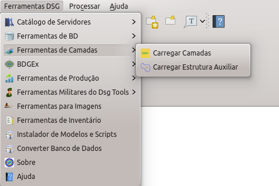

Tendo sido executada com sucesso a criação de um banco de dados, torna-se possível a manipulação de camadas. Este submenu do DSG Tools permite ao usuário carregar camadas por categoria e por classe, além de carregar estruturas auxiliares, ou seja, ajustes de cobertura terrestre. Esse menu pode ser acessado conforme mostrado na figura abaixo.

Carregar Camadas Carregar estrutura auxiliar